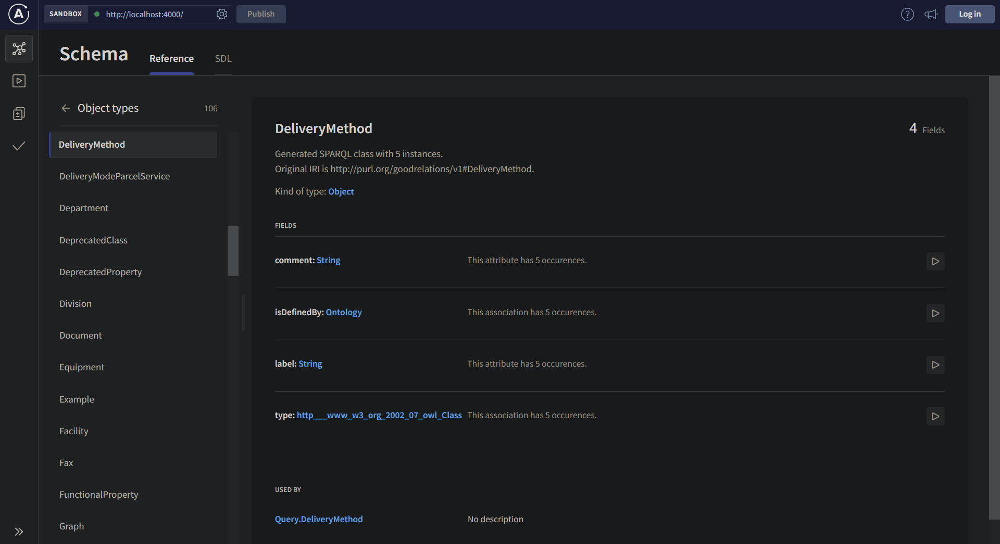
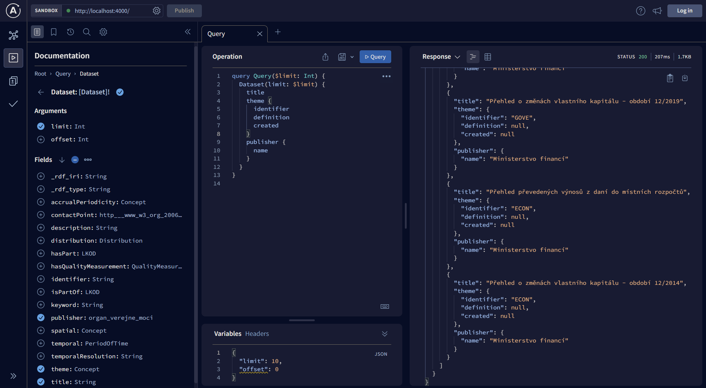

Usage guide
This page will explain how to set up SPARQL2GraphQL for a given SPARQL endpoint, step-by-step.
Installing dependencies
The project is written in TypeScript and uses Node.js as its runtime.
You will need to have the following installed before you proceed with usage:
- Node 16.13.0 (Gallium LTS) - easily managed with nvm
- npm
Once you have installed them, run npm install in the project root directory to install
all required dependencies with npm.
Library interface
The main functionality is encapsulated by the SPARQL2GraphQL class in src/api/index.ts.
This class contains functions for the main tasks users may want to perform.
Most notably, the buildSchemaAndRunEndpoint functions is provided for users
who want the least configuration necessary. It is enough to simply set up a Config
as shown in the next section, and run SPARQL2GraphQL like so:
const config = {
...
};
const sparql2graphql = new SPARQL2GraphQL();
// This method returns a Promise, so you should await it
// if you want to do something after the server has started.
sparql2graphql.buildSchemaAndRunEndpoint(config);
The SPARQL2GraphQL class also contains other functions which perform
smaller parts of the whole algorithm, which you may want to use if your
task is more complex than convert this SPARQL endpoint into a GraphQL endpoint.
For example, the observeAndBuildSchema function performs all the steps up to
and including schema building, meaning one could use it to simply save the
GraphQL schema into a file and do something else with it, rather than
starting a GraphQL endpoint.
Edit configuration
There is one required configuration step before you run the library - configuring
the SPARQL endpoint you want to run. In src/api/config.ts, set the value
ENDPOINT_TO_RUN to refer to your endpoint. There is a pre-defined list of known
online and working endpoints in src/observation/endpoints.ts in case you just want
to try the project without having a specific SPARQL endpoint in mind, but you can
easily define your own.
A very basic configuration can look like this:
import { Config, SIMPLE_LOGGER } from './api/config';
const config: Config = {
endpoint: {
url: 'https://dev.nkod.opendata.cz/sparql',
name: 'NKOD',
},
logger: SIMPLE_LOGGER,
};
The endpoint name can be whatever you want, it's just an easily readable
identifier used in logs. The logger property is not mandatory,
but it is very helpful to specify a logger in order to see what's
going on. Any winston logger will do,
but the SIMPLE_LOGGER defined in src/api/config.ts defines a sane default
logger which logs the most important messages to the console.
There are other configuration values in Config which you are free to modify, but they have
sensible defaults in case you just want to get started. If you want to find out
more about additional configuration options, they are documented in the
configuration file itself.
Run it
Putting together the above code examples is enough to start a SPARQL2GraphQL instance,
which will observe the configured SPARQL endpoint and convert it to a GraphQL one.
Alternatively, if you are running SPARQL2GraphQL from this repository,
you can run npm start, which will run src/main.ts, which is an entrypoint
meant for starting the server from withing this repository.
In that case, edit your configuration there.
In the logs, you will see that it will first run some observations on the target endpoint to collect information about its schema and the data contained within. This may take a while, especially for large datasets, depending on the configuration parameters used. As an example, the NKOD endpoint shown in the configuraiton above takes about 2 minutes to have a fully functional GraphQL instance running.
After observation is finished, you will see that a fully functional GraphQL interface is available for you to explore and query at the configured port (localhost:4000 by default).
Explore the schema
When you open the GraphQL interface in your browser, you will see an interface provided by Apollo Server. It allows you to explore the schema including all of the available classes, as well as their properties, relations, how many times they occur in the dataset and other metadata.

The interface also allows you to interactively build and execute queries against the endpoint.
Hot reloading
You may notice that with the default configuration, another round of observation will start right after the GraphQL server is created.
This is hot reloading in action. Because fully observing the entire dataset in the endpoint may take a long time, the initial observations are limited by the default configuration - observation will only count up to 1000 occurences for each property in the dataset.
After the server has started, it's fully available and functional for purposes of schema exploration and querying. In the background, SPARQL2GraphQL continues to make more detailed observations, and seamlessly updating the GraphQL schema in the GraphQL endpoint.
You can read more about hot reloading here.
Query the endpoint
If you are not yet familiar with how to compose GraphQL queries, you can learn more about GraphQL here.
You can use the interface to query the data, either writing the query yourself, or using the graphical query editor to compose the query.

NOTE: be careful running queries which have an unlimited result size!
If your SPARQL endpoint contains a very large dataset, the query could either
run for a very long time, or it might just fail due to a timeout.
You should use the limit and offset parameters provided in each query
field as shown in the image above.